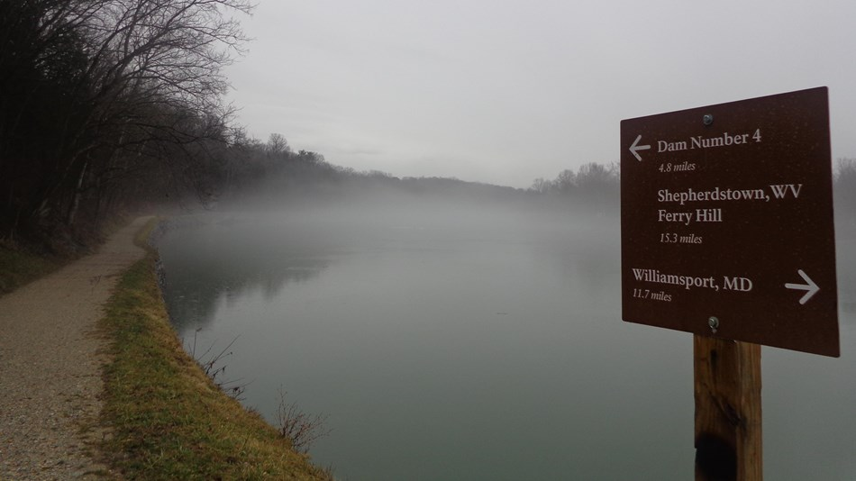
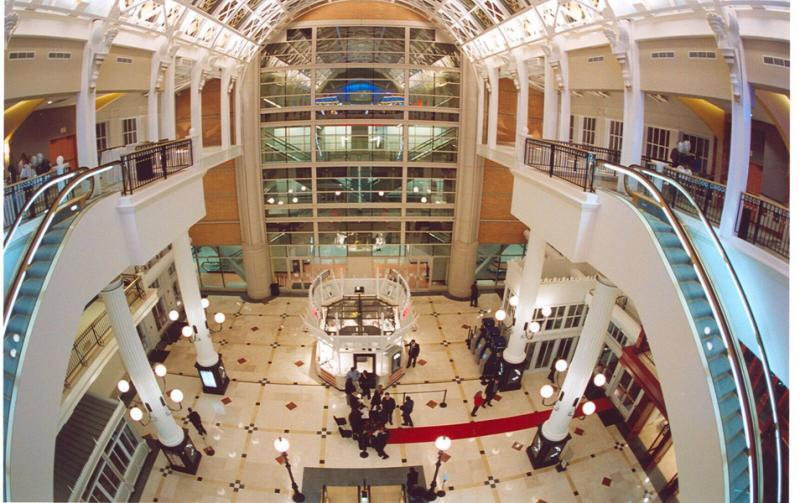
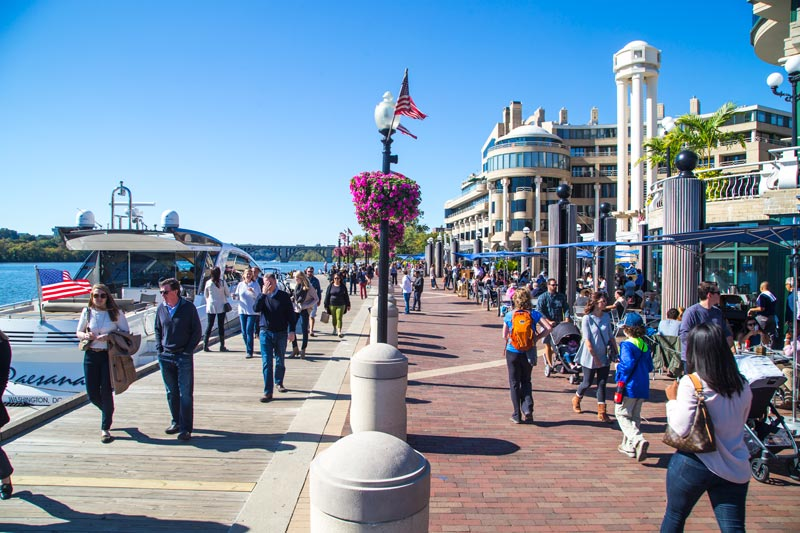
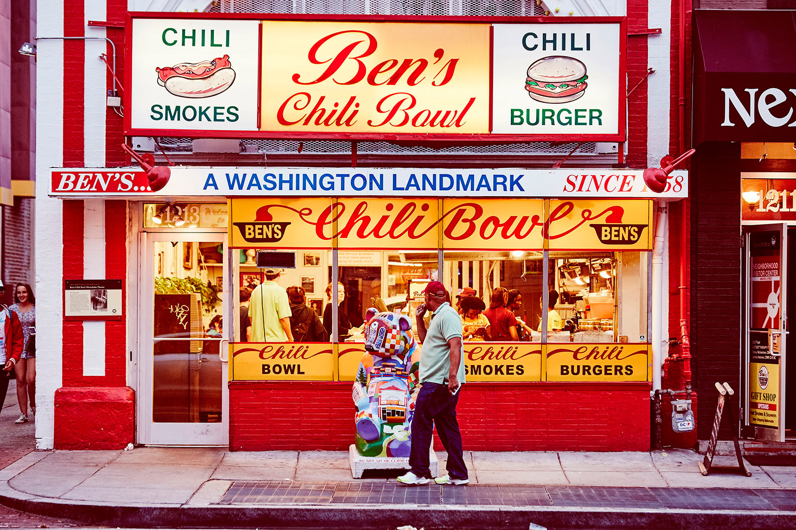
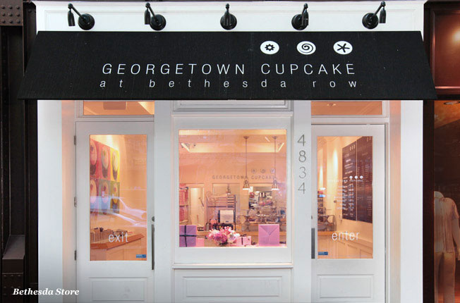

| Attraction |
| Nature |
 |
This is the Chesapeake and Ohio Canal. It has amazing trails and views |
 |
This is Potomac Heights. It is perfect for athletic people looking to hike, bike, or paddle |
| Shopping |
 |
Gallery place is situated at the heart of chinatown and there you will find amazing things at reasonable
prices
|
|  |
Georgetown is one of the most affluent parts of DC and it has all the high end stores you need |
| Food |
 |
Ben's chili bowl is an iconic DC landmark and serves some of the best chili in DC |
|  |
Looking for high end and delicious cupcakes? Make sure to stop at Georgetown Cupcake when in DC |